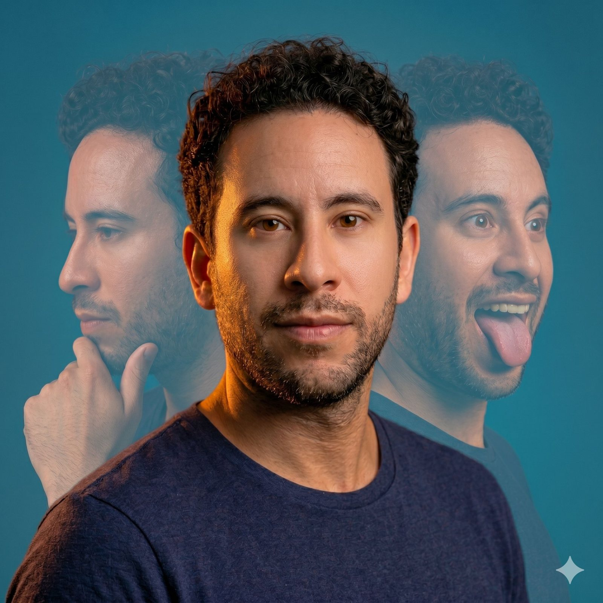

Un poco sobre mí
Cuando buscaba universidad pregunté: «¿Ahí me enseñan a ser creativo?». Me dijeron que sí, pero mintieron. Empecé Publicidad sabiendo que quería hacer creatividad, pero dudando si debía enfocarme en algo más — porque de creativo, no tenía nada.
Así arranqué en digital, haciendo community management y contenido para marcas importantes sin entender del todo lo que hacía, pero buscando siempre hacer algo diferente. Tras muchas ideas «locas» que no cuajaban, empezaron a gustar algunas. Y ahí entendí algo: las ideas que funcionaban no eran las más diferentes ni las más alocadas, sino las que resolvían el problema de una forma diferente.
Pasé por content, copy jr, copy sr, estratega… y cuando empecé a trabajar con planning, todo hizo sentido. Encontré la pieza del rompecabezas que faltaba en mi vida profesional. Aquí fue donde me enamoré otra vez de la publicidad: mi cerebro lógico y cuadrado por fin podía entrar al juego y ayudarle a mi hemisferio derecho a crear.
Hoy, después de más de 10 años en los que he pasado de todo, por fin puedo decir que me siento creativo — y me encanta llevar estos aprendizajes a los equipos que he liderado, y a los que vendrán.

Director de Operaciones — Madrid
Administración del negocio, relación con proveedores, equipo legal y operaciones.
Head of Creative Dept. & Creative Planner — Guadalajara
Liderando cuentas como Hershey's, Carl's Jr., Pelon Pelo Rico, Elite, Tajín y Babysec.
Content Leader & Social Media Leader
Comunicación digital para Dairy Queen LATAM, Papa John's, Tony Roma's, SAS y más.
Content Manager
Contenido para Microsoft, Windows y MetLife.
Internet Smart Solutions · Marnie Agency · Brandslab
New Balance México, BMW Motorrad, MINI, Teletón y Brandslab Creative Boutique.